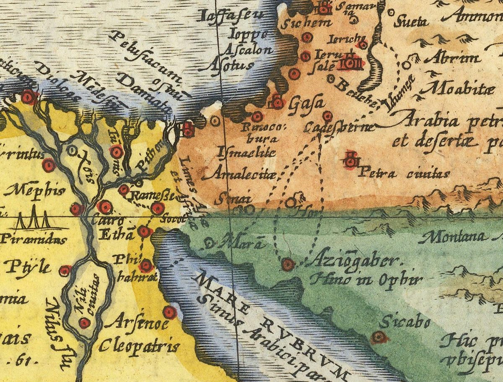

Numbers 33 — The Mister Translation

Abraham Ortelius (1527-1598), the Antwerp cartographer usually credited with the first modern atlas, designed this map of the Exodus route decades before his death; this particular sheet is a 1624 printing, so it postdates him — a common situation for a popular map plate reprinted across several editions. It labels the stations this very chapter names — ‘Rameffe’ (Rameses) and ‘Etha’ (Etham) in the Nile delta, ‘Mara’ and ‘Sinai’ in the peninsula, ‘Aziogaber’ (Ezion-geber) on the Red Sea, ‘Cadefbarne’ (Kadesh-barnea) at the frontier, then ‘Ierichu’ and ‘Ierufalem’ in Canaan — strung together by the same dotted line this chapter spends fifty-six verses describing in prose. ⚠ Read the map's own historical layer honestly: labels like ‘Ismaelite,’ ‘Amalecitae,’ and ‘Arabia petraea et desertae’ reflect Ortelius's own 16th-century classical-geography framework, not a modern archaeological survey — a period lens on the same terrain, worth noticing rather than mistaking for documentary precision.
{kind=link}
Numbers 33:1-4 — Moses writes it himself, and a forty-year-old promise is checked off
⚠⚠ V2 stops the itinerary before it starts to explain what it is, and does it with a chiasm this English keeps: ‘Moses wrote their DEPARTURES according to their STAGES… and these are their STAGES according to their DEPARTURES.’ The two nouns, motza’eihem and mas’eihem, cross over each other around the verse’s own center. Mas’ei, ‘stages,’ is this chapter’s own name — and the identical root behind vayis’u, ‘and they journeyed,’ which opens forty-two of this chapter’s fifty-six verses.
⚠⚠ V4’s closing clause is a promise collected forty years late. Exodus 12:12 — already on these pages, describing this very night — has Jehovah say e’eseh shephatim, ‘I WILL execute judgments,’ against Egypt’s gods. Here the same two Hebrew words return in the perfect: asah shephatim, Jehovah ‘HAS executed judgments’ on them. Searched consonantally, this exact collocation — Egypt’s gods and the verb ‘to execute judgments’ — occurs in exactly these two verses, and nowhere else in the Hebrew Bible. The itinerary opens on the receipt for a promise the plague narrative made in the future tense.
⚠ V3’s own details are doing real work. ‘On the day after the Passover’ ties this departure to the very calendar Exodus 12 founded in the same breath the departure happened; ‘with a high hand’ (a raised fist, not a fleeing one) is this chapter’s own word for HOW Israel left — not smuggled out under cover, but walking, ‘before the eyes of all the Egyptians.’
Numbers 33:5-15 — Egypt to Sinai, and two stations Exodus never named
⚠ Every station from Succoth to the wilderness of Sinai is already a story on these pages (Exodus 12-19) — Succoth, Etham, the Sea crossed, Marah, Elim, the wilderness of Sin, Rephidim, Sinai. ⚠ V7’s full ‘Pi-hahiroth’ becomes v8’s bare ‘Hahiroth’ one verse later — the SAME place, its prefix dropped inside a single sentence’s worth of text.
⚠⚠ Between the wilderness of Sin and Rephidim, this chapter names two stations neither Exodus 16 nor Exodus 17 ever mentions — Dophkah, Alush — and Exodus 17:1 itself signals the gap. That verse reads: ‘all the congregation of the children of Israel set out from the wilderness of Sin, BY THEIR STAGES’ — le-mas’eihem, the identical word this whole chapter takes its title from — ‘according to the command of Jehovah, and camped in Rephidim.’ A plural ‘stages’ covers a move Exodus’s own narrative tells as one uninterrupted trip. Numbers 33 is where the missing stages finally get their names.
Numbers 33:16-36 — Most of these stations are otherwise unknown, two the reader has already grieved at, and a desert this chapter names twice
⚠⚠ Kibroth-hattaavah and Hazeroth (vv16-17) are not new to this project. Numbers 11 — already on these pages — is where the meat-craving ended at a graveyard named for the craving itself (‘the word the chapter opened with at v4 is the word it buries people under at v34’); Numbers 12 is where Miriam’s own week outside the camp happened at Hazeroth. The itinerary lists both as two lines in a column; the earlier chapters are where the reader already knows what each name cost.
⚠⚠⚠ The very next station, Rithmah (v18), is almost certainly the itinerary’s own more exact name for a stop the narrative only located generally. Numbers 12:16 has Israel move from Hazeroth into ‘the wilderness of Paran’ as a REGION, naming no camp; this chapter is more precise about WHERE than the story chapters ever needed to be. The pattern holds for the whole stretch that follows.
⚠ From Rithmah to Ezion-geber (vv18-35), most of the names — Rimmon-perez, Rissah, Kehelathah, mount Shepher, Makheloth, Mithkah, Hashmonah, Moseroth, Hor-haggidgad, Abronah among them — are attested nowhere else in the Hebrew Bible as place-names outside this very chapter, where each is named twice over (once as a destination, once as the next verse’s point of departure). A few of the eighteen — Libnah, Haradah, Tahath, Terah — share their consonants with an unrelated common word or a different town elsewhere in the Bible, so they are not counted in that claim. Two more genuinely survive by name but not by silence: Bene-jaakan (v31) and Jotbathah (v33) are the exact stations Deuteronomy 10:6-7 — the very passage the next note quotes at length as a conflicting account of Aaron’s death — preserves outside this chapter, so the two names this itinerary would otherwise have kept entirely to itself are the two the seam over Aaron’s death happens to need. Searched one by one, the rest genuinely survive nowhere but here. The better part of thirty-eight years compresses into names this list is the only record of.
⚠ V36 closes the leg with an identity statement — ‘the wilderness of Zin, that is, Kadesh’ — and this same chapter is the one place an English reader can watch two similarly-spelled deserts sit twenty-five verses apart and stay genuinely distinct. The wilderness of SIN (vv11-12, Hebrew Sin) and the wilderness of ZIN (v36, Hebrew Tzin) are different letters for different places; this project’s own Zin entry already flags the confusion — the Douay-Rheims, following the Vulgate, prints ‘the desert of Sin’ for BOTH.
Numbers 33:37-40 — Two asides break the march: a death with a date, and an enemy who is only listening
⚠⚠⚠ For the first time in forty-nine verses, the itinerary stops naming camps and reports two things instead — and the first one is a seam this project’s own earlier chapter already promised. Numbers 20 reported that Deuteronomy 10:6 ‘does report a burial… and places it at MOSERAH, not at Mount Hor,’ and closed with ‘readings differ, and this project shows the seam rather than choosing for you.’ Numbers 33 is where the seam widens. Here Aaron dies at Mount Hor (v38), matching Numbers 20 exactly, with two facts neither earlier account gives: an EXACT calendar date — year forty, fifth month, first day, one of a small number of precisely dated events in the whole wilderness narrative alongside Exodus 40:17 and Numbers 1:1 — and his age, a hundred and twenty-three. Deuteronomy 10:6-7 (not yet on these pages, quoted here because the crux cannot honestly be shown otherwise) instead has Israel journey ‘from Beeroth-bene-jaakan to Moserah; there Aaron died, and there he was buried’ — no date at all — and gives the stations on either side in the OPPOSITE order this chapter does: Numbers 33 runs Moseroth (v30) then Bene-jaakan (v31) then Hor-haggidgad (v32); Deuteronomy runs Beeroth-bene-jaakan first, then Moserah, then Gudgod. Three real disagreements sit in five verses’ worth of text — where he died, which of two stations came first, and what to call the third one (Hor-haggidgad here, Gudgod there) — and this translation does what Numbers 20 already promised: it shows all three, and votes on none.
⚠ V40’s notice about Arad interrupts a moving itinerary to report someone merely LISTENING — ‘the Canaanite, the king of Arad… heard of the coming of the children of Israel’ — and stops there. Numbers 21:1-3, already on these pages, is where that hearing turns into an attack, a captured Israelite, and a battle Israel wins and names Hormah. V40 is the itinerary quietly filing the first half of a story it has already told in full elsewhere — in the order the events actually happened, rather than the order this summary is walking through them.
Numbers 33:41-49 — From the mountain where Aaron died to the plain where Moses will
Punon (v42), reached the second stop after Mount Hor, sits in what is now the Wadi Faynan in southern Jordan — one of the largest ancient copper-smelting districts in the whole region, worked from long before Israel arrived into the Roman period. The text says nothing about the mines directly, but three chapters earlier — already on these pages — Israel crossed this exact stretch of the Edomite frontier and Moses made a serpent OF BRONZE at Jehovah’s word; the itinerary now names, without comment, the district where that metal was actually dug out of the ground.
⚠ Oboth and Iye-abarim (vv43-44) are not new names either. Numbers 21:10-11, already on these pages, named them in this same order as the itinerary resumed after the bronze serpent, where ‘the geography is doing the work’ and ‘the Arnon gorge is a real and formidable boundary.’ This is the second time the same two camps are named, in the same order, by two different hands telling two different kinds of account — and v45’s own ‘Iyim’ is the text’s own shortened echo of the fuller ‘Iye-abarim’ it had just given a verse before.
⚠ V45’s ‘Dibon-gad’ is worth a pause. Numbers 32, already on these pages, names this same town plain ‘Dibon’ twice — once on the tribes’ own wish-list (v3), once in the list of what they actually built (v34) — and only HERE, in the master itinerary, does the text call it ‘Dibon OF GAD,’ tagging the camp with a tribal ownership Numbers 32 records but never itself attaches to the name. The itinerary speaks from the vantage point of a possession already settled.
⚠ The leg ends ‘before Nebo’ (v47) — the FIRST time this mountain is named on these pages. It will not be climbed until Deuteronomy 34 (not yet on these pages), the one summit from which Moses will see the whole land and enter none of it.
Numbers 33:50-53 — Three objects, three verbs, and no room left for a fourth
⚠⚠ V52 names three separate things Israel must destroy, in three Hebrew words this translation keeps apart rather than flattening into one. Maskitam, their FIGURED STONES — a rare word: searched consonantally, it occurs in exactly three verses of the whole Hebrew Bible, here, Leviticus 26:1 (already on these pages, forbidding ‘a figured stone… to bow down upon it’), and Ezekiel 8:12 (not yet on these pages, where the elders of Israel worship idols in a private ‘chamber of his imagery’ in the dark). Tzalmei massekotam, their MOLTEN IMAGES — the same word this project already used of the golden calf, already on these pages: an idol cast in metal, not carved. And bamotam, their HIGH PLACES, the raised open-air shrines the books of Kings will spend centuries condemning. Three objects, three verbs — destroy, destroy, demolish — and no fourth category left standing.
⚠ V53’s own justification is stated as a plain fact, not an argument being made for the first time: ‘for I have given you the land, to possess it.’ The transfer has already happened, in the text’s own telling; taking possession is obedience to a fact, not a claim newly asserted.
Numbers 33:54 — A law repeated almost word for word, except for one letter of grammar
⚠⚠ V54 is not new law — it restates, almost verbatim, what Numbers 26:52-56 already commanded: the same head-count-plus-lot division, the same ‘to the many… to the few’ formula, the same word goral for the lot itself (this project’s own goral entry already traces the word from there back through Jonah’s storm and forward to the soldiers at the cross). What differs is one letter’s worth of grammar.
⚠⚠ Numbers 26:54 uses the SINGULAR verb twice — tarbeh… tam’it, ‘you [singular] shall increase… you [singular] shall decrease’; here the first verb turns PLURAL — tarbu, ‘you-all shall increase’ — while the second stays singular, tam’it, and the possessive ‘his inheritance’ (nachalato) stays singular throughout, describing one tribe as one man. Of this project’s own shelf, only the ASV tries to carry the shift into English — ‘to the more YE shall give the more inheritance, and to the fewer THOU shalt give the less inheritance’ — letting the pronoun itself move from plural to singular exactly where the Hebrew does. Every other version, in both languages, flattens the whole verse to one grammatical number.
Numbers 33:55-56 — Two true hapax legomena, a shelf that cannot agree which goes where, and the same word reassigned to the other eye
⚠⚠⚠ V55’s two nouns, sikkim and tzeninim, are BOTH true hapax legomena — searched consonantally, neither occurs anywhere else in the whole Hebrew Bible. (The fourteen other hits for sikkim’s root mostly belong to an unrelated verb, ‘to rise early,’ or to the word for darkness — two more belong to different roots still: Judges 5:14’s ‘those who wield’ [from ‘to draw, wield’] and Micah 3:5’s ‘those who bite’; there is no second occurrence of either noun at all.) ⚠ The shelf cannot agree which one goes where. KJV, ASV, Geneva, both NWT editions, NIV, RV60, RV antigua, and both TNM editions all put the sharper-sounding word in the EYES and ‘thorns’ in the SIDES — pricks, barbs, irritants, aguijones, púas, astillas: every language reaches for a different specific word, but every one of them keeps ‘thorns’ for the sides. The Douay-Rheims, working from the Vulgate, breaks the pattern completely — ‘nails in your eyes, and spears in your sides’ — a harsher pair of images with no Hebrew word behind either noun. The Living Bible paraphrases furthest of all: ‘cinders in your eyes.’
⚠⚠ Joshua 23:13 (not yet on these pages) reuses tzeninim — and moves it. There the same word sits in the EYES, not the sides (‘a scourge in your sides, and pricks in your eyes’), paired with two openings this chapter does not have — a snare and a trap. The one word this chapter can prove is a true hapax within Numbers still gets reassigned to the opposite body part the one other time the Bible reaches for it.
⚠ V56 closes the whole itinerary-and-charge with a single symmetrical threat: ‘as I planned to do to them, I will do to you.’ It is v4’s opening line turned around. There, Jehovah executed judgments ON EGYPT’s gods to free Israel; here, the judgment already prepared for CANAAN — drive out, destroy — becomes Israel’s own sentence the moment Israel fails to carry it out. A chapter that began with a promise fulfilled ends with one still conditional.
Notes on this translation
Decisions. The Hebrew has three Masoretic paragraph breaks — after v39, v49, and the chapter’s own close at v56 — sitting exactly at the seams between the chapter’s three real movements: Egypt to Aaron’s death, the rest of the itinerary to the plains of Moab, and the legal charge. ‘Journeyed’ and ‘camped’ render vayis’u/vayachanu throughout, matching Numbers 21’s own precedent rather than Exodus’s ‘set out’ — chosen because the verb IS this chapter’s own title-word, mas’ei. Maskit is kept ‘figured stones,’ distinct from massekah ‘molten images’ (already fixed at the golden calf, Exodus 32:4) and bamah ‘high places’ — three objects, three words, none collapsed into another. Sikkim is rendered ‘barbs,’ against a majority-shelf convention that reserves ‘thorns’ for tzeninim in the sides.
Library. Four new dictionary entries in both languages: masa, ‘stage, journey,’ this chapter’s own title-word; shephatim, in the fixed phrase ‘executed judgments’ this project now uses at both Exodus 12:12 and this chapter’s own v4; maskit, the figured stone; and sikkim, the eyes-thorn. Two existing entries extended: goral, tied now to its near-twin at Numbers 26:52-56; and bamah, with this chapter’s own destruction-charge. Five new encyclopedia entries in both languages: Rameses, the departure point; Ezion-geber, later Solomon’s own Red Sea port; Kibroth-hattaavah, filling a gap Numbers 11 left open; Punon, the copper district beside the bronze serpent’s own road; and Dibon, the town Numbers 32 already named twice, plain, before this chapter tags it ‘of Gad’. Existing entries extended: Hor, Kadesh, Zin, Abarim, and Moab all gained this chapter’s references. Two more gained their first Spanish edition here rather than being extended (their English entries already existed and were not themselves touched): Aaron — the new Spanish text carries the exact date and age of his death, a detail the English entry does not yet have — and the Sea of Reeds (yam-suph), the water this chapter names twice (vv10-11).
Echoes paid — six. Numbers 20’s own promise that Deuteronomy 10:6 ‘reads differently’ comes due at vv37-39, widened rather than closed. Numbers 12’s ‘wilderness of Paran’ is answered by this chapter’s own more exact ‘Rithmah’ (v18). Numbers 21:1-3’s Arad notice gets the missing first half of its own story at v40. Numbers 21:10-11’s Oboth and Iye-abarim are named a second time, in the same order, at vv43-44. Numbers 26:52-56’s lot-and-census law is restated at v54, one grammatical number changed. And Exodus 12:12’s future-tense promise on Egypt’s gods is answered in the perfect tense at this chapter’s own v4.
Patterns worth carrying forward. First: a summary chapter can be MORE precise about geography than the narrative chapters it summarizes — Rithmah for ‘the wilderness of Paran,’ Dophkah and Alush for Exodus 17:1’s own admitted plural ‘stages.’ Second: two accounts of the same event (Aaron’s death here and at Deuteronomy 10:6) can disagree on three separate points at once — location, sequence, and name — and the right response, set at Numbers 20 and kept here, is to show all three rather than harmonize any of them. Third: a name itself can carry a fact the surrounding chapter never states outright — ‘Dibon-gad’ (v45) records an allotment Numbers 32 only ever puts in prose.
Echoes planted. Ezekiel 8:12’s own ‘chamber of imagery’ is flagged for maskit’s next appearance. Deuteronomy 10:6-7’s Moserah is flagged for whoever eventually translates it. Joshua 23:13’s reassigned tzeninim is flagged to pay off from the other direction. And Deuteronomy 34’s Nebo is flagged for the mountain this chapter names first (v47).
⚠ A note on order: Numbers stands on these pages at chapters 1, 2, 3, 4, 5, 6, 7, 8, 9, 10, 11, 12, 13, 14, 15, 16, 17, 18, 19, 20, 21, 22, 23, 24, 25, 26, 27, 28, 29, 30, 31, 32, and now 33. Chapters 34–36 remain the open sequence.